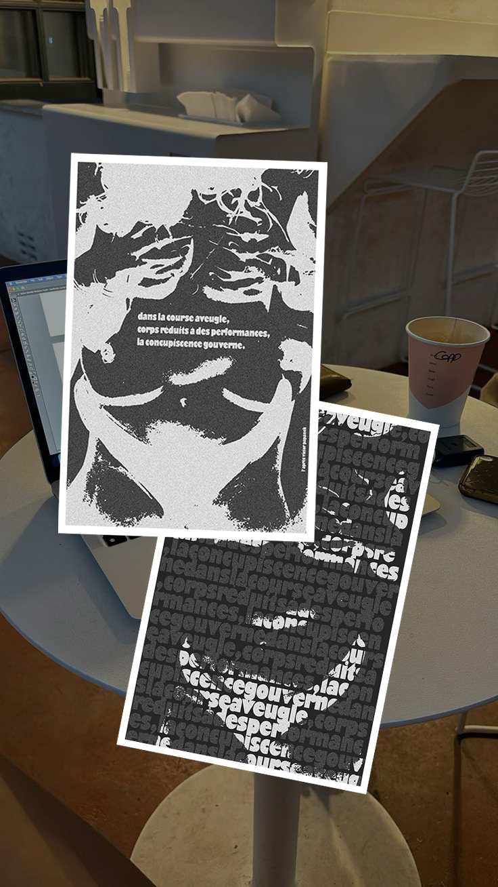

Design engagé · Photomontage
Affiche l’après
Victor Papanek
Un haïku, un photomontage. Un projet artistique autour de l’évanescence, pour traduire en image ce qui apparaît, nous touche un instant, puis s’efface.
Trois lignes. Et tout est dit.

Le point de départ
La brièveté
du haïku.
Un haïku est un poème d’origine japonaise extrêmement bref, qui célèbre l’évanescence des choses et les sensations qu’elles suscitent.
Cette forme poétique m’a donné une contrainte : comment retrouver, dans une image, l’intensité d’une émotion exprimée en quelques lignes ?
Mon intention
Une image
qui se ressent.
J’ai voulu traduire cette sensation visuellement, sans illustrer le haïku au premier degré : quelque chose qui apparaît, qui nous touche une seconde et qui s’en va.
J’ai travaillé en photomontage sur Photoshop, en superposant les images, les textures qui s’effacent et les lumières qui ne restent pas.
Pour que l’image fasse comme le poème : elle ne s’explique pas, elle se ressent.
Nourrir ma pratique
Dire beaucoup
avec très peu.
Ce projet ne répond pas à un brief client, mais à une contrainte poétique. C’est un espace de liberté où je peux tester, expérimenter et chercher d’autres manières de communiquer.
Ces explorations nourrissent ensuite les projets que je réalise pour mes clientes, avec une même question : comment dire beaucoup avec très peu ?